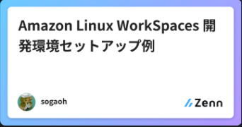

業務委託やコミュニティ
メンバーでも活用できる
IAM Identity Center
2022/10/08
About Me

- 1月 SRE NEXT Assoc. 理事、5月 SRE NEXT 2022 Staff
- 3月 ant-in-giant G.K. 設立、代表社員
- 6月〜 既存WebサービスリニューアルプロジェクトにおけるSREロール、
複業でクラウドインフラ・CI/CDの構築・運用サポートなど
Recent Activity
|  |
AGENDA
- はじめに
- Main組織にSSO設定
- Main組織配下にFree組織を設定
- Free組織メンバーへのSSO設定
- この方法の発展
- おわりに
- 資料は公開してあります -> https://kutt.it/nKy9B3
- ※1. 履歴が増殖するため、シークレットウィンドウでご覧ください（Chromeを推奨）
- ※2. ところどころの青の文字はリンクになっています
- ※3. スペースで次のページに進みます（[o]でOverviewが見れます）)
- (SpeakerDeck版 はダウンロードしたPDFならリンクに飛べるのでご利用ください)
- はじめに
- Main組織にSSO設定
- Main組織配下にFree組織を設定
- Free組織メンバーへのSSO設定
- この方法の発展
- おわりに
状況想定
- Main組織 : プロダクトAを運営する会社
企画・デザイン・開発の部署あり。小人数ではない- Google Workspace 高めエディション (*1)
- 業務委託メンバー数名ほど（リモート・関東）
- Google Workspace Business Starter
- 協力会社メンバー数名ほど（リモート：関東以外）
- IdP 特になし
- カレンダー共有は個人のGmailなど
- IdP 特になし
(*1) refs: Google Workspace（旧称 G Suite）: お支払いプラン
IAM Identity Center 導入の
モチベーション
- アカウント管理（入社/退職対応）が大変
- 業務委託・協力会社メンバー契約開始終了もある
- アクセスキー・シークレットキー漏洩のリスク
- ログイン操作の手間を減らしたい
- 不要な IAM ユーザーを作りたくない
- 時流に乗りたい
※ IAM Identity Center は以降 SSO と表現します（長いので）
※ Google Workspace は以降 GW と表現します（長いので）
課題解決への一手
- GW 高めエディションに下位組織を設けて
業務委託・協力会社メンバーをそこに投入 - この下位組織には Google Cloud Identity Free
(以降 GCIF)の無料ライセンスを割り当てる (*2)
※ 以降、この下位組織を Free組織 と表現します
- [デメリット]：
- 個々のメンバーが管理するアカウントが増える
- 業務委託・協力会社、副業・アルバイト・…
- 個々のメンバーが管理するアカウントが増える
(*2) refs: 完全無料のIDaaS！？Google Cloud Identity Freeを試してみる (2021.11.06)
- はじめに
- Main組織にSSO設定
- Main組織配下にFree組織を設定
- Free組織メンバーへのSSO設定
- この方法の発展
- おわりに
組織と AWS の紐付け
- 管理アカウントで AWS Organizations を有効化
- 前提条件 を確認したうえで、SSO (*3) を有効化
- ID ソースを選択する
- サポートされている ID プロバイダー に GW はない
- ので、手動で SAML 連携設定を行う (*4)
(*3) IAM Identity Center
(*4) ガイド (2022/8/29時点) : AWS Control Tower Workshops > … > Google Workspace ・・・以下↓、注意点
- 全面英語、画面が最新でない
- Google GCP - create Directory Service API から AWS SSO - Check Provisioning まではオプショナル
- Deleting AWS resources deployed in this lab はしない
許可セット (IAM) の準備
- ユーザー追加
- ユーザー名 と E メールアドレス は同じにする
- ユーザーが所属するグループを作成
- 権限（≒許可セット）がわかりやすいようにすると良い
- 許可セットを作成
- 事前定義された許可セットから選択 (*5) or
- カスタマイズされたIAMポリシー（カスタム許可セット）(*6)
(*5) refs: AWS managed policies for job functions (※ Read-only access が外れている)
(*6) refs: Managed policies and inline policies, AWS services that work with IAM, …
インラインポリシーを作りこなせると強そう
許可セットを割り当てる
- SSO アクセスを行いたい AWSアカウント に レ
- 「ユーザーまたはグループを割り当て」を行う
- 割り当てたいグループ or ユーザーに レ して「Next」
- 割り当てたい許可セットに レ して「Next」
- 確認して「送信」
とても丁寧で詳しい説明ブログ：“え、IAM ユーザーを作らなくてもマネジメントコンソールにログインできるの!?”
シングルサインオン実践編 (2022.01.19)
シングルサインオン考え方編 (2021.11.26)
- はじめに
- Main組織にSSO設定
- Main組織配下にFree組織を設定
- Free組織メンバーへのSSO設定
- この方法の発展
- おわりに
GCIFの開始
- 特権管理者で、GW 管理画面に入る
- お支払い > その他のサービスを… > Cloud Identity
- Cloud Identity (*7) を「開始」
(*7) refs: Cloud Identity とは | Google Workspace 管理者ヘルプ
Free組織にGCIFライセンス割当
- お支払い > ライセンスの設定
- Main組織の 自動ライセンス -> オフ (*8)
- ディレクトリ > 組織部門
- Main組織の配下に新しいFree組織を作成する (*9)
- (再び) お支払い > ライセンスの設定
- 作成したFree組織の自動ライセンス オフ を確認
(*8) refs: 設定時に Google Workspace ライセンスの自動割り当てを無効にする | Google Workspace 管理者ヘルプ
(*9) refs: 組織部門を追加する | Google Workspace 管理者ヘルプ
Free組織にユーザー追加
- ディレクトリ > ユーザー > 新しいユーザーの追加
- ユーザー情報の設定
- 姓・名・メールアドレス・ドメイン
- ユーザーの…、組織部門、…を管理するを展開
- Free組織を選択して「新しいユーザーの追加」
- ユーザー名・パスワードを控える（伝える）
- Free組織を選択して「新しいユーザーの追加」
- お支払い > ライセンスの設定 を確認
- 有料ライセンスが割り当たっていたら削除する
- はじめに
- Main組織にSSO設定
- Main組織配下にFree組織を設定
- Free組織メンバーへのSSO設定
- この方法の発展
- おわりに
SSOでFree組織メンバー追加
- Main組織と同様にユーザー追加
- ユーザー名 と E メールアドレス は同じにする
- Main組織と同様にグループにユーザーを追加
- 既存であればこの段階で許可セットが割り当てられる
- 必要に応じて、許可セットを割り当て
- 新規グループ (or ユーザー) の場合など
Main組織と同様にできること
- AWS アクセスポータルの URL から SSO
- GW からのマネコン接続も
- ユーザー作成・グループへの追加
- AWSアカウント・許可セットへの割り当て
当初のモチベーション等への達成
-
アカウント管理の簡素化 ○
-
アクセスキー類漏洩のリスク低減 ○
-
ログイン操作の手間低減 ○
-
時流に乗る ○
-
GW のコストは（ほぼ）増えていない ○
- はじめに
- Main組織にSSO設定
- Main組織配下にFree組織を設定
- Free組織メンバーへのSSO設定
- この方法の発展
- おわりに
マネコンへの入り口は開いた
- AWSアカウント作成時にやるべきこと を見直す
- マルチアカウント管理の基本 を抑えにいく
- 大変そうだ・・・少しずつやるのが良さそう (*10)
- 大変そうだ・・・少しずつやるのが良さそう (*10)
- 組織のみんなにAWSをうまく使ってもらえれば
それでOK
(*10) refs: プロダクトと組織の成長を見据えたスマートラウンドの AWSマルチアカウント戦略
: AWS Startup Community Conference 2022 (2022.08.26) 資料
GCIF以外の方法も知る
- フェデレーティッド シングルサインオン (*11) x
- 踏み台アカウントパターン (*12)
-> AWS SSO (IAM Identity Center) よりは煩雑と
なるものの、IAMユーザーはほぼ不要にできる
(個人的には)MFA不要な方法に寄せたい
(*11) refs: Google Workspace を用いて AWS へのフェデレーティッド シングルサインオンをセットアップする方法
(*12) refs: AWSのマルチアカウント管理ことはじめ ログインの一元化の設計
よりよい管理の模索
-
IaC で状態管理
- cloudposse/terraform-aws-sso Module
- cloudposse/aws-google-auth Module
- など …
-
IAM インラインポリシーを自在に使いたい
- はじめに
- Main組織にSSO設定
- Main組織配下にFree組織を設定
- Free組織メンバーへのSSO設定
- この方法の発展
- おわりに
まとめ (?)
- AWS SSO のはじめかた、
それによって解決できる課題 - GCIF という IdP の紹介、
利用する際の注意点 - 複数の情報・技術を組み合わせてみる
ことから生まれる発展可能性
End
お気づきの点あれば
@sogaoh まで
余談
 |
|
 |
|